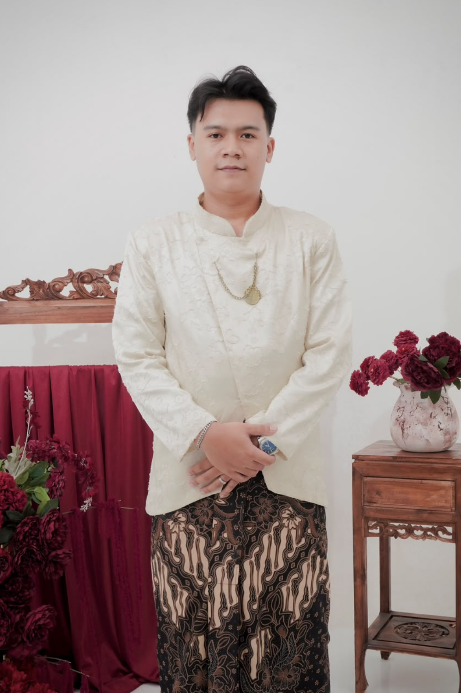
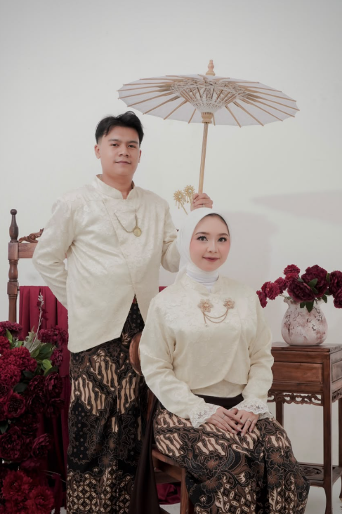
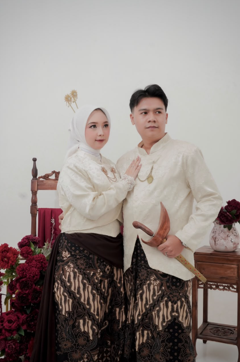
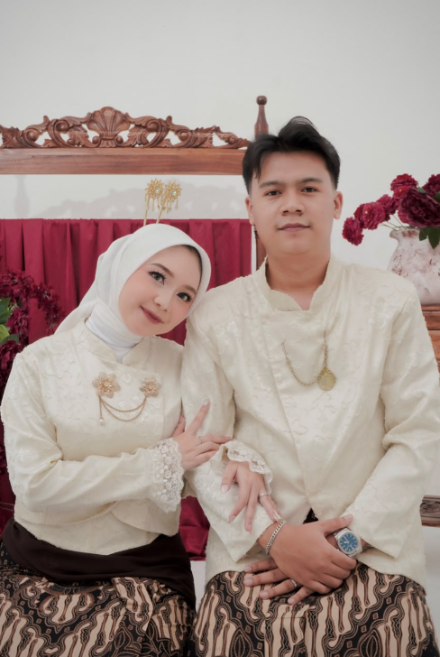
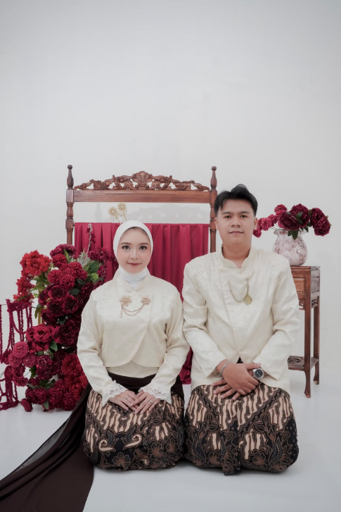

SELAMAT DATANG
The Wedding OfMerupakan suatu kehormatan dan kebahagiaan bagi kami apabila Anda berkenan hadir untuk memberikan doa restu.
Sabtu, 19 Desember 2026
"Dan di antara tanda-tanda (kebesaran)-Nya ialah Dia menciptakan pasangan-pasangan untukmu dari jenismu sendiri, agar kamu cenderung dan merasa tenteram kepadanya."

Putra Keempat dari bapak Amy Mulyana dan Ibu Eti
Instagram
Sabtu, 19 Desember 2026
Pukul 09.00 WIB
Perumahan Permata Sukamukti Blok D1 NO. 26 Kp Landean Girang Desa Sukamukti Kec. Katapang Kab. Bandung - Jawa Barat
Google MapsSabtu, 19 Desember 2026
Pukul 11.00 - 14.00 WIB
Perumahan Permata Sukamukti Blok D1 NO. 26 Kp Landean Girang Desa Sukamukti Kec. Katapang Kab. Bandung - Jawa Barat
Google MapsSebuah kisah yang bersemi kembali di masa sekolah dengan versi berbeda dan memilih untuk tetap tinggal.
Terlalu panjang jika harus diceritakan dari awal.. karena cinta kami bukan tentang bagaimana semuanya dimulai, tapi tentang bagaimana kami bertahan. Kami hanya dua manusia biasa, yang ditakdirkan untuk saling menggenggam, melewati badai, melewati pelangi, hingga sampai di titik ini.
Ribuan tangis, jutaan tawa menjadi saksi bagaimana kata “yakin” terus kami ucapkan untuk menguatkan hati yang sempat rapuh. Bukan sekadar janji yang terucap, tapi langkah yang terus bergerak. Hingga pada suatu hari yang penuh haru, mempertemukan dua keluarga dan menyatukan doa dalam satu restu.
Tidak selalu mudah, tidak setenang yang terlihat. Namun kami memilih percaya bahwa Allah tak pernah salah dalam menuliskan takdir. Dengan segala harap, kami menanti hari di mana sebuah janji suci terucap, mengikat satu jiwa dalam satu arah.
Menuju hari ini... akan tiba hari itu, hari di mana kami memulai perjalanan baru sebagai “kita”.
Doakan agar langkah kami selalu diliputi lembutnya takdir dan keberkahan ✨💗
Doa Restu Anda merupakan karunia yang sangat berarti bagi kami. Namun jika ingin memberi hadiah, Anda dapat mengirimkannya secara digital.



Budi Santoso ✔ Hadir
Selamat untuk Barkah dan Arvy! Semoga menjadi keluarga yang sakinah mawaddah warahmah.